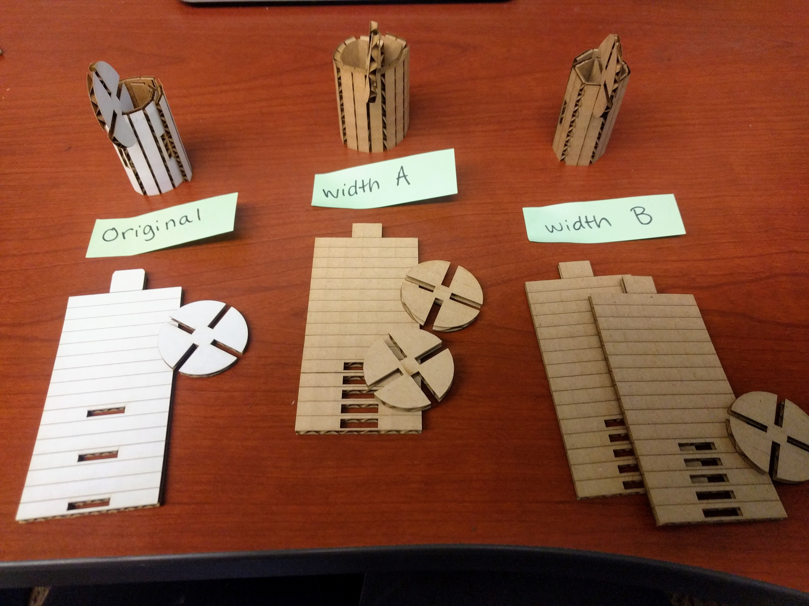
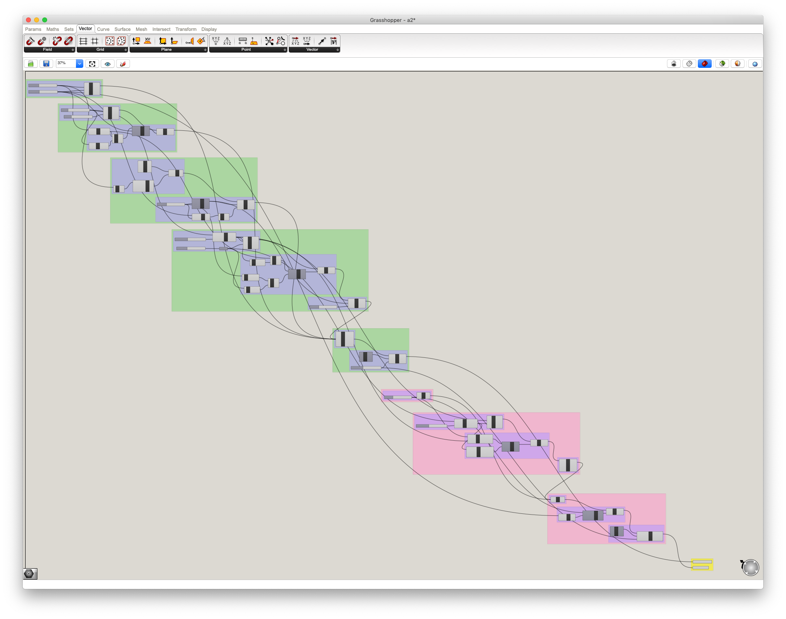
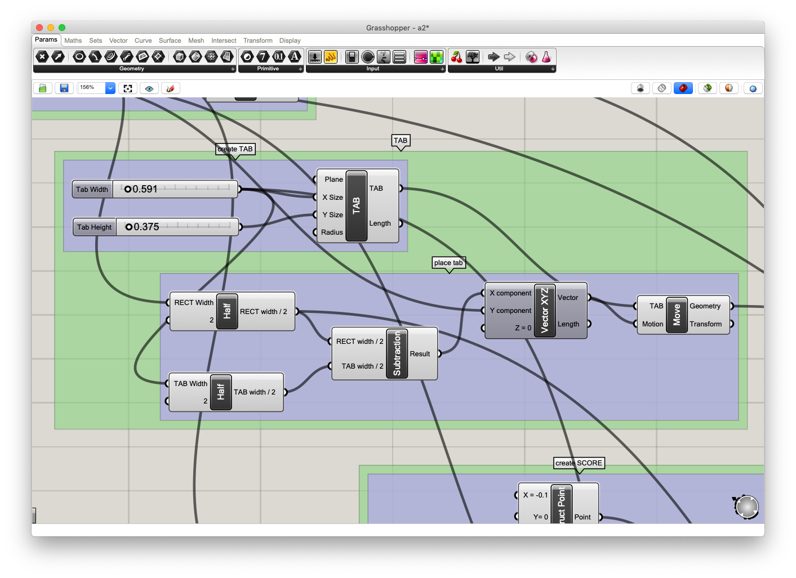
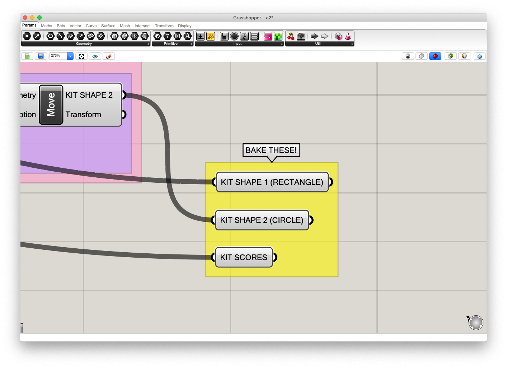
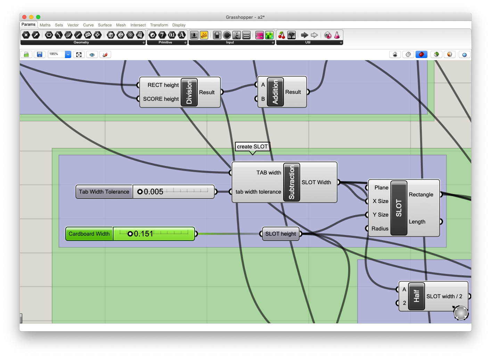
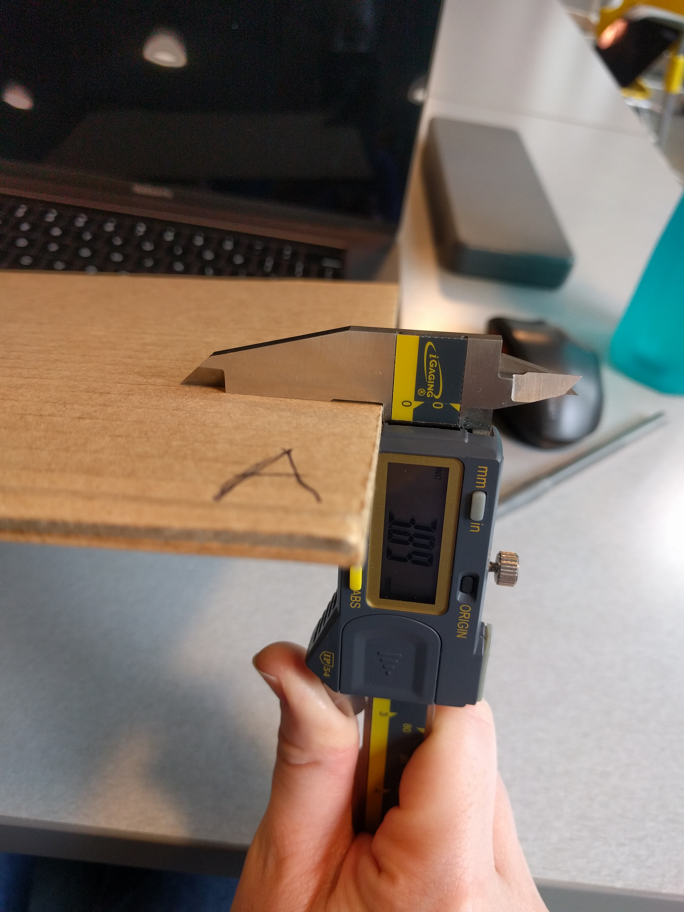
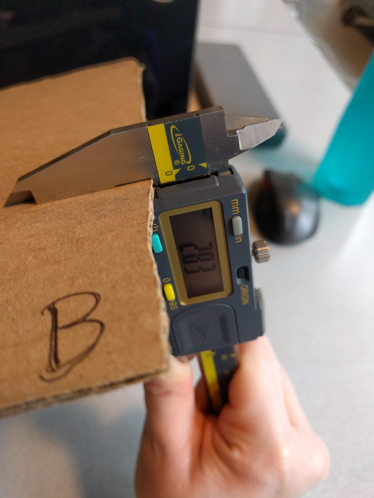

Colleen's Assignment 2!
I made the same kit as in Assignment 1, only I used Rhino and Grasshopper to parameterize the kit shapes' dimensions. This helped make adjusting to new widths of cardboard and experimenting with different tolerances easier.
Grasshopper File Structure
I re-used several variables (e.g. Tab Width) through out my file. This quickly led to 'rat-nesting'. Rather than try to disentagle the lines, only to have to redo them all when I update it later, I made use of the grouping and labeling features in Grasshopper. Below you can see the groups are colored according to which Kit Shape they belong to - green for rectangle and pink for circle.
I grouped the components, first into single actions. For example, the Create Tab group includes a Rectangle component and two Number Sliders for its height and width, while the Place Tab group has a Vector and Move component to put the tab into place. Then I made a higher level grouping for all the actions that apply to open distinct shape. So the Create Tab and Place Tab groups are grouped together into the TAB group. This is useful because I know that the final TAB geometry comes out of the right-most geometry output of the TAB group.
Notice in the screenshot below that instead of clearing up the lines, I just labeled each input and output with consistent variable names, so it's clear to see how they connect.
Baking Geometries
I also pulled out the final geometries to bake into their own group at the end of the file so that they are easy to find. You don't want to bake anything before it or you may end up with intermittent shapes in weird places.
Each geometry becomes its own layer, this makes color mapping or show/hiding for different powers easier when it is in Adobe Illustrator. The scores are technically part of Kit Shape 1 but it's easiest to bake them into a separate layer now because they will need to be later for color mapping, anyway.
Parameterizing the Construction Kit
I parameterized Cardboard Width in my grasshopper file. It's set up as a Number Slider so it's easy to adjust. When you change this one parameter, the slot sizes for the tabs on the rectangle and the slot sizes on the circles are both updated.
Cardboard width is all that really needs to be updated to use the file on different width material, but I also paramterized the following to make for easy experimentation:
- Rectangle Height
- Rectangle Width
- Circle Diameter
- Tab Height
- Tab Width
- Distance Between Scores
- Rectangle Slot Tolerance (How much smaller/larger than the tab width it should be)
- Circle Slot Tolerance
- Number of Circle Slots
New Materials
I still used cardboard for both of the materials in this assignment, so that I could use the same scoring technique. One was 2.83mm and the other was 3.89mm. Not a huge difference, but enough so that the tab size of one didn't work for the other.
Final Step
Found cardboard comes in lots of different shapes, so the Grasshopper file only produces one of each Kit Shape. This way the Kit Shapes can be arranged as needed in Illustrator. Then all you need to do is print!